自回归建模不绑定特定神经网络结构，可由 RNN、CNN（因果卷积）、Transformer（因果注意力）等多种架构实现。本文详细介绍这三种常见架构的设计与特点。
自回归模型的网络架构需要满足以下核心要求:
本节从 RNN 单元出发，逐步推导出基于 RNN 的自回归模型。核心思想是:通过时间维度的展开实现因果性，通过参数共享实现高效建模。
第一步:RNN 单元
RNN 的基本单元接收当前输入 \(x_t\) 和上一时刻的隐藏状态 \(h_{t-1}\)，输出新的隐藏状态 \(h_t\): \[h_t = f(x_t, h_{t-1})\]
其中 \(f\) 是递归函数（如 LSTM、GRU 的非线性变换）。单元内部不依赖未来输入，天然具有因果性。
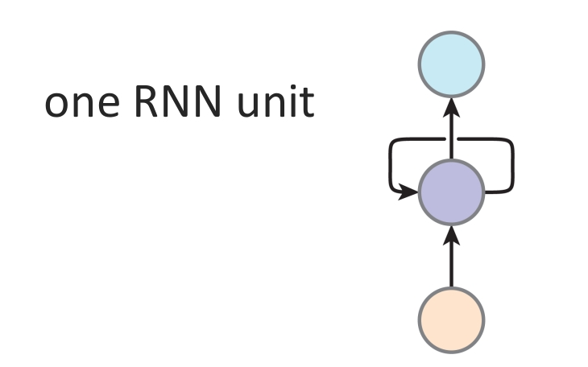
图 2.1 RNN 单元:接收当前输入 \(x_t\) 与上一时刻隐藏状态 \(h_{t-1}\)，输出当前隐藏状态 \(h_t\)
第二步:沿时间维度展开
将 RNN 单元按时间步展开，得到链式结构:\(h_0 \rightarrow h_1 \rightarrow h_2 \rightarrow \cdots \rightarrow h_T\)。每个 \(h_t\) 只依赖 \(x_t\) 和 \(h_{t-1}\)（从而间接依赖 \(x_{\leq t}\)），序列中任意位置的输出都不会“看到”未来信息。
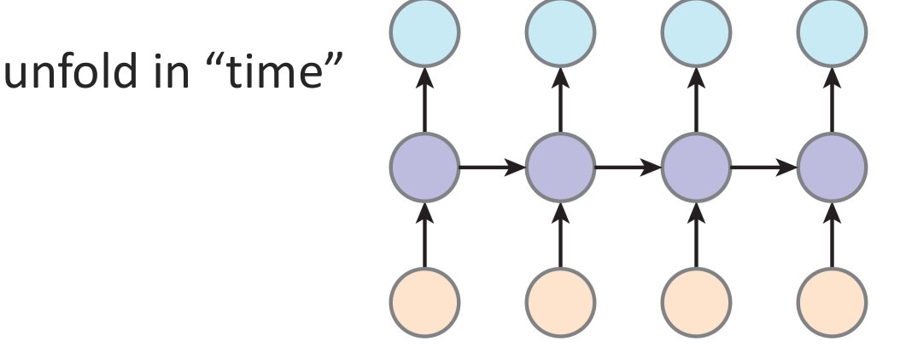
图 2.2 时间维度展开:RNN 单元沿时间步展开为链式结构，信息从左向右单向流动
第三步:沿深度展开
堆叠多层 RNN 单元，形成深度网络。第 \(l\) 层的隐藏状态 \(h_t^{(l)}\) 作为第 \(l+1\) 层的输入，增强模型的表达能力。
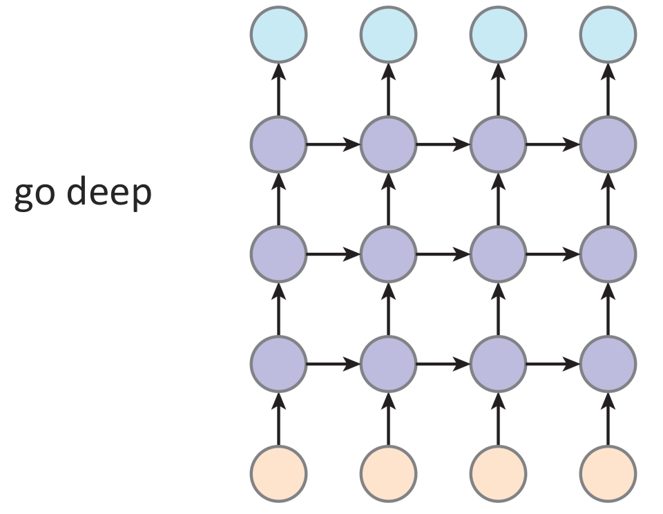
图 2.3 深度展开:多层 RNN 堆叠，同一时刻不同层之间垂直连接，形成深度结构
第四步:期望平移一步（自回归目标）
自回归建模的目标是预测下一个 token:\(p(x_t \mid x_{<t})\)。因此，我们希望模型在位置 \(t\) 的输出对应的是 \(x_{t+1}\) 的预测。这等价于将输入序列与目标序列向后平移一步:输入 \([x_1, \ldots, x_{T-1}]\)，目标 \([x_2, \ldots, x_T]\)。
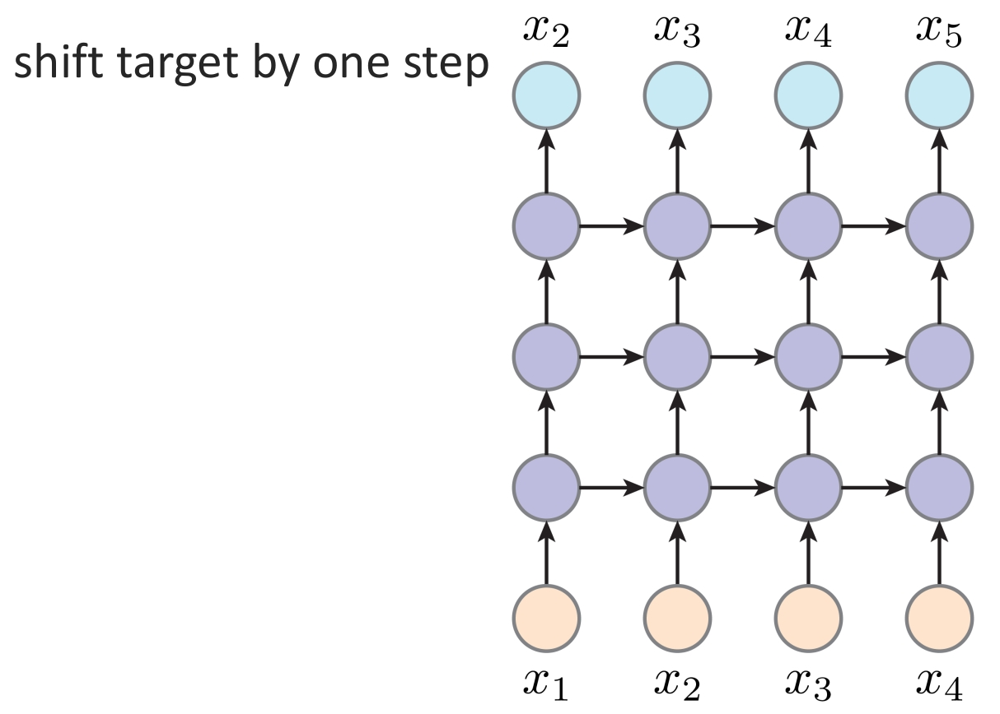
图 2.4 平移一步:输入序列与目标序列错位一位，模型在位置 \(t\) 预测的是 \(x_{t+1}\)
第五步:共享计算
所有时间步复用同一组参数（同一个 RNN 单元），这就是“共享计算”。训练时，我们可以将整条序列一次性输入，并行计算所有位置的条件分布，计算高效且参数效率高。
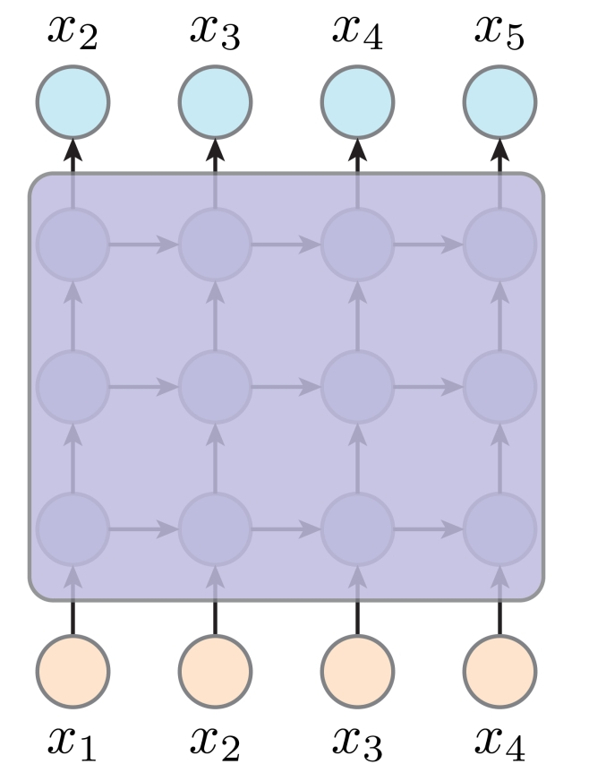
图 2.5 参数共享:所有时间步使用相同的 RNN 单元（同一组参数），实现高效的序列建模
综上，我们得到了 RNN-based 的 AR 模型:因果性由递归结构保证，共享计算由参数复用实现，训练采用 Teacher Forcing 并行计算各时间步。
自回归推理路径:推理时需逐步生成，每次将新生成的 token 作为下一步输入，并传递隐藏状态。路径示意如下。
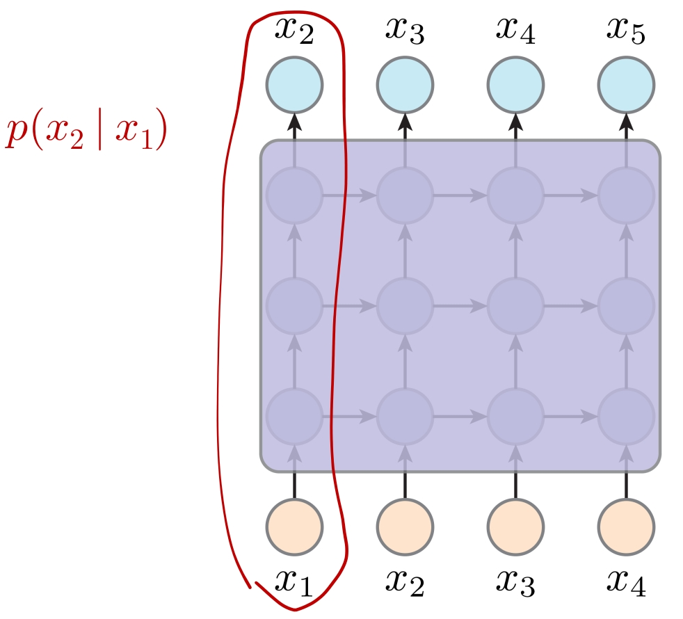
图 2.6 自回归推理（步骤 1）:给定起始条件，生成第一个 token，并更新隐藏状态
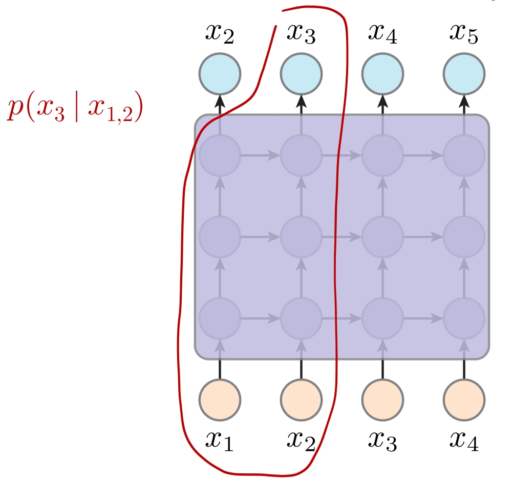
图 2.7 自回归推理（步骤 2）:将上一步生成的 token 作为输入，继续生成下一个 token
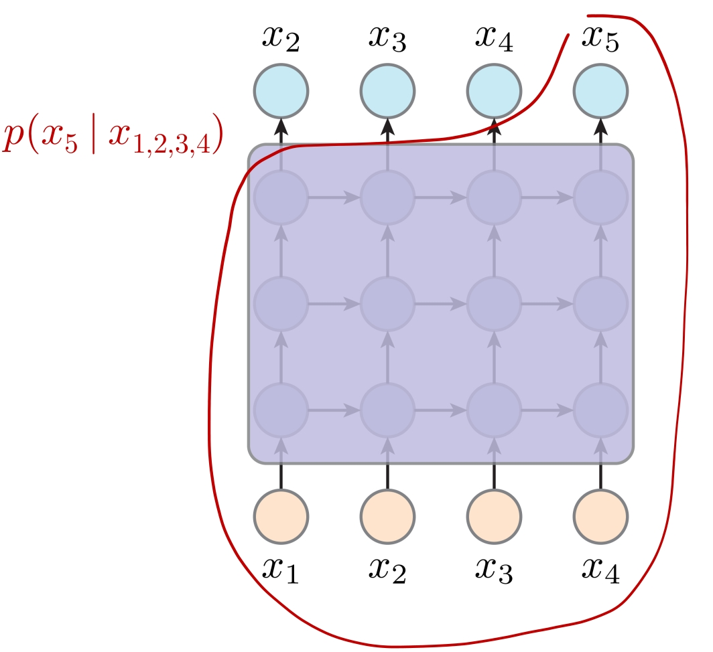
图 2.8 自回归推理（完整路径）:重复上述过程直至生成完整序列，每步依赖前步输出与隐藏状态
下面以 MNIST 图像生成为例，给出基于 RNN 的自回归模型核心实现。图像展平为 784 维序列，每个像素二值化后建模为 Bernoulli 分布。
1. 模型结构
class AR_RNN(nn.Module):
def __init__(self, input_dim=1, hidden_dim=256, num_layers=2, dropout=0.2):
self.input_proj = nn.Linear(input_dim, hidden_dim) # 像素 → 特征
self.lstm = nn.LSTM(hidden_dim, hidden_dim, num_layers=num_layers,
dropout=dropout if num_layers > 1 else 0, batch_first=True)
self.output = nn.Sequential(
nn.Linear(hidden_dim, hidden_dim), nn.ReLU(),
nn.Linear(hidden_dim, input_dim) # 输出 Logits
)2. 训练阶段（Teacher Forcing）
整序列一次输入，LSTM 内部并行处理，输出每个位置的 logits:
def forward(self, x):
x_proj = self.input_proj(x) # (B, T-1, H)
lstm_out, _ = self.lstm(x_proj) # 因果性由 LSTM 结构保证
return self.output(lstm_out) # (B, T-1, 1) Logits3. 推理阶段（自回归生成）
逐步生成，每步只输入上一个 token，通过 hidden_state 传递历史:
def generate(self, batch_size, seq_len=784, device='cpu', temperature=1.0):
generated_seq = torch.zeros(batch_size, seq_len, self.input_dim, device=device)
hidden_state = None
for t in range(1, seq_len):
last_pixel = generated_seq[:, t-1:t, :] # 上一步生成的像素
current_feature = self.input_proj(last_pixel)
lstm_out, hidden_state = self.lstm(current_feature, hidden_state) # 传递 hidden
logits = self.output(lstm_out[:, -1, :])
next_pixel = torch.bernoulli(torch.sigmoid(logits / temperature))
generated_seq[:, t, :] = next_pixel
return generated_seq4. 损失函数
二值像素使用 BCEWithLogits:
def loss_function(pred, target):
return F.binary_cross_entropy_with_logits(pred.reshape(-1), target.reshape(-1))与 RNN 不同，CNN 在序列上沿时间维度展开时，需要显式保证因果性。普通卷积使用对称填充，会“看到”未来信息；因果卷积通过不对称填充，使输出只依赖当前及过去的输入。
沿时间展开
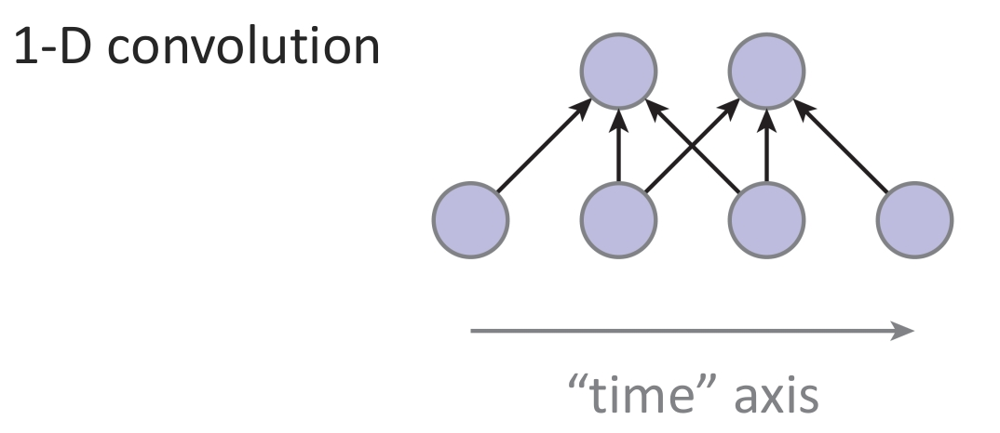
图 2.9 CNN 沿时间维度展开:卷积核沿序列滑动，处理序列各位置
填充
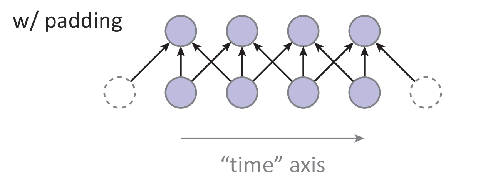
图 2.10 填充:为保证输出长度，需在序列两端或单侧进行填充
因果卷积
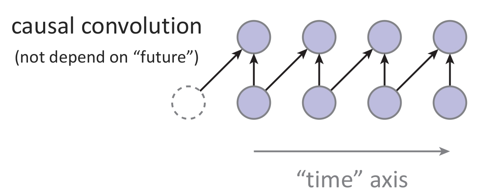
图 2.11 因果卷积:仅在左侧填充，输出时移除右侧多余部分，确保输出只依赖 \(x_{\leq t}\)
膨胀卷积 / 空洞卷积（Dilated / Atrous Convolution）
因果卷积保证因果性，但普通卷积（kernel_size=3，dilation=1）每层感受野仅 3 个位置，要覆盖长序列需要堆叠很多层。膨胀卷积通过增大膨胀率（dilation），在不增加参数量的前提下扩大感受野。
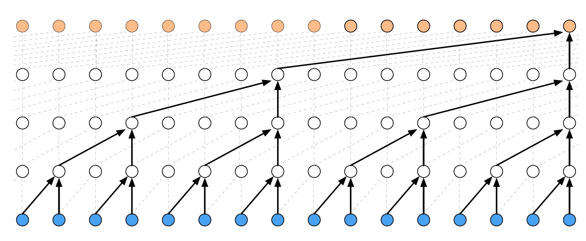
图 2.12 空洞卷积示意图:dilation=4 时卷积核的覆盖范围
堆叠多层时令 dilation 指数增长（1, 2, 4, 8, …），可快速扩大感受野。例如 8 层、kernel=3、dilation=1,2,4,…,128 时，感受野约 \(1 + 2(1+2+4+\cdots+128) = 511\)，足以覆盖 MNIST 的 784 维序列。
增加深度（多层堆叠，结合膨胀卷积）、期望平移一步（输入/目标错位）、共享计算（同一卷积核沿时间复用）与 RNN 类似，此处不再赘述。
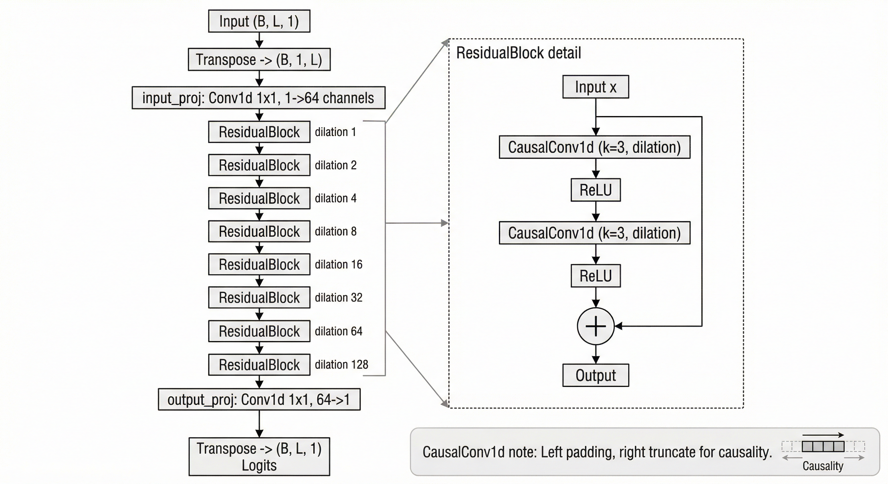
图 2.13 CNN-based AR 网络架构图
1. 因果卷积层（含膨胀卷积）
class CausalConv1d(nn.Module):
"""1D因果卷积层。确保输出只依赖于当前及之前的输入；使用膨胀卷积(Dilated Convolution)扩大感受野"""
def __init__(self, in_channels, out_channels, kernel_size, dilation=1):
super().__init__()
# Padding放在左边，模拟因果性；PyTorch的Conv1d padding是两边都加，需要自定义
self.padding = (kernel_size - 1) * dilation
self.conv = nn.Conv1d(in_channels, out_channels, kernel_size,
padding=self.padding, dilation=dilation)
def forward(self, x):
out = self.conv(x)
# 移除右侧多余的padding，只保留左侧的padding（历史信息），保持长度一致且具有因果性
if self.padding > 0:
out = out[:, :, :-self.padding]
return out2. 残差块
class ResidualBlock(nn.Module):
"""残差块:包含两个因果卷积层和跳跃连接"""
def __init__(self, channels, kernel_size, dilation):
super().__init__()
self.conv1 = CausalConv1d(channels, channels, kernel_size, dilation)
self.conv2 = CausalConv1d(channels, channels, kernel_size, dilation)
self.relu = nn.ReLU()
def forward(self, x):
residual = x
out = self.relu(self.conv1(x))
out = self.relu(self.conv2(out))
return out + residual3. 模型结构与训练
# __init__ 中:堆叠残差块，dilation 指数增长 (1, 2, 4, 8, ...)
self.input_proj = nn.Conv1d(input_dim, hidden_dim, 1)
self.layers = nn.ModuleList()
for i in range(num_layers):
dilation = 2 ** i
self.layers.append(ResidualBlock(hidden_dim, kernel_size, dilation))
self.output_proj = nn.Conv1d(hidden_dim, input_dim, 1)
def forward(self, x):
x = x.transpose(1, 2) # (B, L, C) -> (B, C, L)
x = self.input_proj(x)
for layer in self.layers:
x = layer(x)
return self.output_proj(x).transpose(1, 2) # (B, L, C) Logits4. 推理阶段（自回归生成）
代码实现上:RNN 每步只取 last_pixel = generated_seq[:, t-1:t, :]（1 个 token）配合 hidden_state；CNN 每步取 current_seq = generated_seq[:, :t, :]（已生成整段）送入 forward。CNN 无 hidden state，预测 \(x_t\) 必须以 \([x_0, \ldots, x_{t-1}]\) 为输入，因此每步对当前序列做一次前向传播:
def generate(self, batch_size, seq_len=784, device='cpu', temperature=1.0):
generated_seq = torch.zeros(batch_size, seq_len, self.input_dim, device=device)
for t in range(1, seq_len):
current_seq = generated_seq[:, :t, :] # A: 获取当前已生成的序列（到位置t-1）
output = self.forward(current_seq) # B: 前向传播
logits = output[:, -1, :] # C: 取最后一个位置的预测 (Logits)
probs = torch.sigmoid(logits / temperature)
next_pixel = torch.bernoulli(probs) # D: 采样
generated_seq[:, t, :] = next_pixel # E: 填入画布
return generated_seq损失函数与 RNN 相同，使用 BCEWithLogits。
与 RNN、CNN 不同，Transformer 通过因果掩码（Causal Mask）实现因果性。位置编码显式注入位置信息（Transformer 本身无位置感知）。增加深度（多层堆叠）、期望平移一步、共享计算与前述架构类似，此处不再赘述。
完全注意力 vs 因果注意力
完全注意力下每个位置可 attend 到所有位置，不满足因果性；因果注意力通过掩码将未来位置设为 \(-\infty\)，位置 \(t\) 只能 attend 到 \(x_{\leq t}\)。
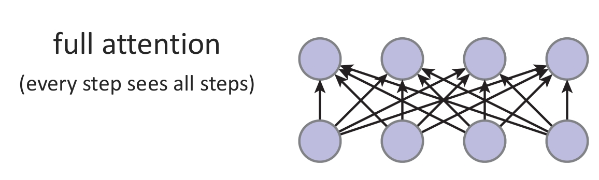
图 2.14 完全注意力:每个位置可看到序列中所有位置
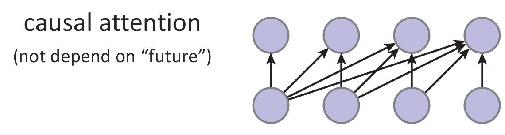
图 2.15 因果注意力:每个位置只能看到当前及之前的位置
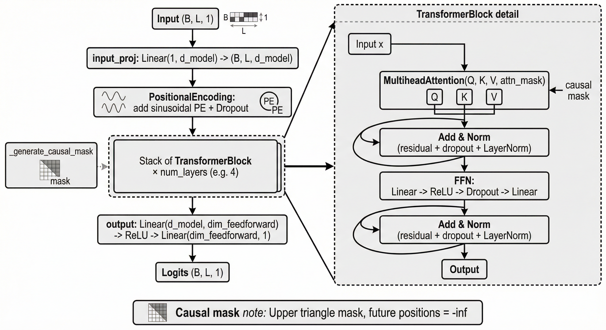
图 2.16 Transformer-based AR 网络架构图
1. 位置编码
class PositionalEncoding(nn.Module):
"""位置编码，为序列添加位置信息"""
def __init__(self, d_model, max_len=1000, dropout=0.1):
super().__init__()
self.dropout = nn.Dropout(p=dropout)
pe = torch.zeros(max_len, d_model)
position = torch.arange(0, max_len, dtype=torch.float).unsqueeze(1)
div_term = torch.exp(torch.arange(0, d_model, 2).float() * (-math.log(10000.0) / d_model))
pe[:, 0::2] = torch.sin(position * div_term)
pe[:, 1::2] = torch.cos(position * div_term)
pe = pe.unsqueeze(0)
self.register_buffer('pe', pe)
def forward(self, x):
x = x + self.pe[:, :x.size(1), :]
return self.dropout(x)2. TransformerBlock
class TransformerBlock(nn.Module):
"""Transformer编码器块"""
def __init__(self, d_model, nhead, dim_feedforward, dropout=0.1):
super().__init__()
self.self_attn = nn.MultiheadAttention(d_model, nhead, dropout=dropout, batch_first=True)
self.linear1 = nn.Linear(d_model, dim_feedforward)
self.linear2 = nn.Linear(dim_feedforward, d_model)
self.norm1 = nn.LayerNorm(d_model)
self.norm2 = nn.LayerNorm(d_model)
self.dropout = nn.Dropout(dropout)
self.dropout1 = nn.Dropout(dropout)
self.dropout2 = nn.Dropout(dropout)
def forward(self, x, attn_mask=None):
attn_out, _ = self.self_attn(x, x, x, attn_mask=attn_mask)
x = x + self.dropout1(attn_out)
x = self.norm1(x)
ff_out = self.linear2(self.dropout(F.relu(self.linear1(x))))
x = x + self.dropout2(ff_out)
x = self.norm2(x)
return x3. 因果掩码
def _generate_causal_mask(self, seq_len, device):
"""生成因果注意力掩码，防止看到未来信息"""
mask = torch.triu(torch.ones(seq_len, seq_len, device=device), diagonal=1)
mask = mask.masked_fill(mask == 1, float('-inf'))
return mask4. 模型结构与训练
# __init__ 中
self.input_proj = nn.Linear(input_dim, d_model)
self.pos_encoder = PositionalEncoding(d_model, max_len, dropout)
self.transformer_blocks = nn.ModuleList([
TransformerBlock(d_model, nhead, dim_feedforward, dropout)
for _ in range(num_layers)
])
self.output = nn.Sequential(
nn.Linear(d_model, dim_feedforward),
nn.ReLU(),
nn.Linear(dim_feedforward, input_dim)
)
def forward(self, x, use_causal_mask=True):
x_proj = self.input_proj(x) # 投影到d_model空间 (B, L, d_model)
x_proj = self.pos_encoder(x_proj) # 位置编码
attn_mask = None
if use_causal_mask:
attn_mask = self._generate_causal_mask(x.size(1), x.device)
out = x_proj
for transformer_block in self.transformer_blocks:
out = transformer_block(out, attn_mask=attn_mask)
return self.output(out) # (B, L, 1) Logits5. 推理阶段（自回归生成）
与 CNN 类似，Transformer 无 hidden state，每步必须以已生成整段序列为输入:
def generate(self, batch_size, seq_len=784, device='cpu', temperature=1.0):
generated_seq = torch.zeros(batch_size, seq_len, self.input_dim, device=device)
for t in range(1, seq_len):
current_seq = generated_seq[:, :t, :] # A: 获取当前已生成的序列（到位置t-1）
output = self.forward(current_seq, use_causal_mask=True) # B: 前向传播
logits = output[:, -1, :] # C: 取最后一个位置的预测 (Logits)
probs = torch.sigmoid(logits / temperature)
next_pixel = torch.bernoulli(probs) # D: 采样
generated_seq[:, t, :] = next_pixel # E: 填入画布
return generated_seq损失函数与 RNN、CNN 相同，使用 BCEWithLogits。
| 特性 | RNN | CNN | Transformer |
|---|---|---|---|
| 训练并行性 | ✅ 高（Teacher Forcing） | ✅ 高 | ✅ 高 |
| 推理并行性 | ❌ 低（逐步生成） | ⚠️ 中等 | ⚠️ 中等（KV Cache） |
| 长距离依赖 | ⚠️ 有限 | ⚠️ 受限于感受野 | ✅ 优秀 |
| 参数量 | ✅ 少 | ✅ 中等 | ❌ 大 |
| 计算复杂度 | \(O(T \times D)\) | \(O(T \times D)\) | \(O(T^2 \times D)\) |
| 适用场景 | 小规模模型 | 中等规模，固定感受野 | 大规模，长序列 |
自回归模型的目标是最大化训练数据的对数似然（log-likelihood）。对于联合分布:
\[p(x_1, x_2, \ldots, x_T) = \prod_{t=1}^T p(x_t \mid x_{<t})\]
对数似然为:
\[\log p(x_1, x_2, \ldots, x_T) = \sum_{t=1}^T \log p(x_t \mid x_{<t})\]
对于离散数据（如文本 token、量化像素值），每个条件分布 \(p(x_t \mid x_{<t})\) 是一个类别分布（categorical distribution）。本文 MNIST 实验将像素二值化，使用 BCEWithLogits（二元交叉熵）建模 Bernoulli 分布；若为多类 token，则使用多类交叉熵。
损失函数形式:
\[\mathcal{L} = -\frac{1}{N} \sum_{i=1}^N \sum_{t=1}^T \log p_\theta(x_t^{(i)} \mid x_{<t}^{(i)})\]
其中: * \(N\) 是批次大小（batch size） * \(T\) 是序列长度 * \(x_t^{(i)}\) 是第 \(i\) 个样本在时刻 \(t\) 的真实值 * \(p_\theta\) 是模型参数化的条件分布
实现细节:
输入准备:
模型输出:
损失计算:
# 展平 logits 和 targets
logits_flat = logits.reshape(-1, vocab_size) # (N*T, V)
targets_flat = targets.reshape(-1) # (N*T)
# 计算交叉熵损失
loss = F.cross_entropy(logits_flat, targets_flat)交叉熵损失的优点: * 直接优化对数似然，与最大似然估计（MLE）目标一致 * 数值稳定（PyTorch 的 cross_entropy 内部使用 log-sum-exp trick） * 计算高效，支持并行计算
对于连续数据（如音频波形），条件分布可以是: * 高斯分布:\(p(x_t \mid x_{<t}) = \mathcal{N}(\mu_t, \sigma_t^2)\) * 混合高斯分布:多个高斯分量的混合 * 其他参数化分布:如逻辑分布（logistic distribution）
高斯分布的损失函数:
\[\mathcal{L} = -\frac{1}{N} \sum_{i=1}^N \sum_{t=1}^T \log \mathcal{N}(x_t^{(i)} \mid \mu_t^{(i)}, \sigma_t^2)\]
\[= \frac{1}{N} \sum_{i=1}^N \sum_{t=1}^T \left[ \frac{1}{2}\log(2\pi\sigma_t^2) + \frac{(x_t^{(i)} - \mu_t^{(i)})^2}{2\sigma_t^2} \right]\]
在 MNIST 上训练 RNN、CNN、Transformer 三种 AR 架构，生成样本如下。
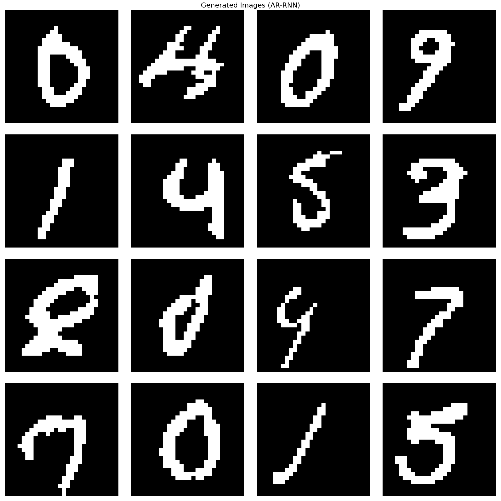
图 2.17 RNN-based AR 生成的 MNIST 样本
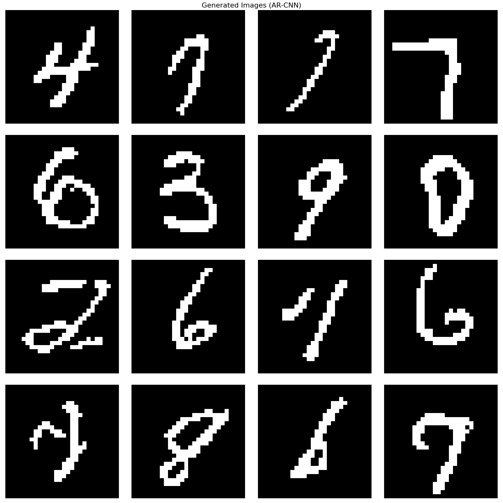
图 2.18 CNN-based AR 生成的 MNIST 样本
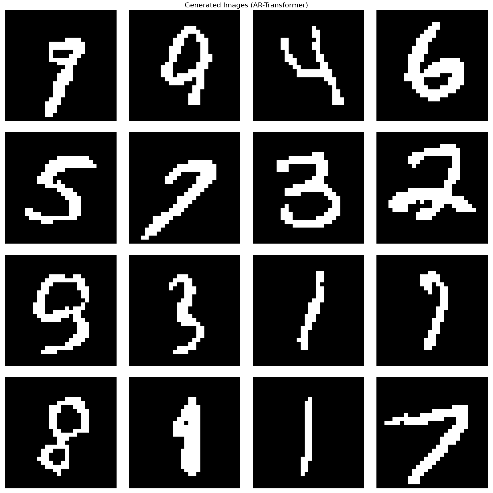
图 2.19 Transformer-based AR 生成的 MNIST 样本
简要结论:三种架构均能生成可识别的数字。RNN 结构简单、参数少，但易受梯度消失影响，长程依赖建模较弱；CNN 通过因果卷积与膨胀卷积扩大感受野，训练与推理均可并行，样本质量中等；Transformer 凭借全局因果注意力，长程依赖建模最好，生成质量通常最高，但参数量更大，且注意力复杂度为 \(O(T^2)\)。在 MNIST 这类 784 维序列上，三者均可取得不错效果，实际选择需权衡质量、效率与资源。